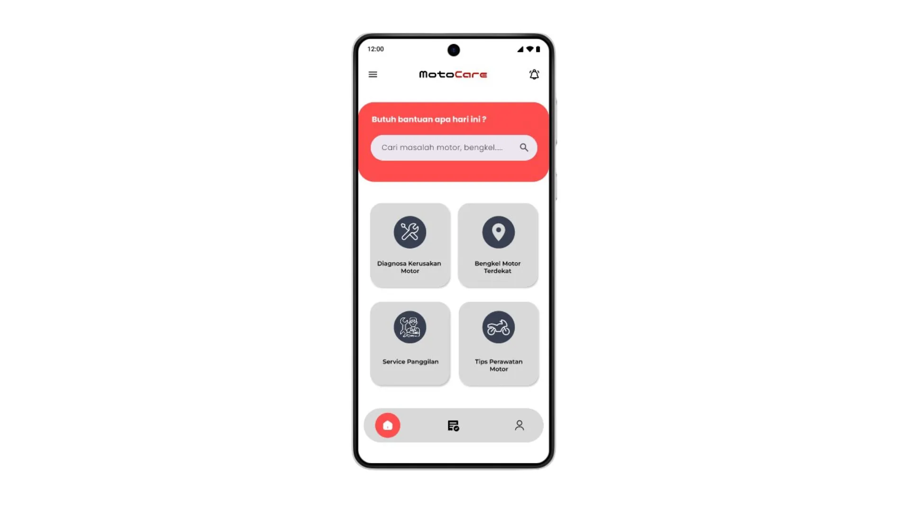

UI Aplikasi MotoCare

Deskripsi Proyek
MotoCare adalah sebuah konsep aplikasi mobile yang didesain untuk menjadi asisten pribadi bagi para pengendara motor. Proyek ini berfokus pada perancangan antarmuka (UI) dan pengalaman pengguna (UX) yang intuitif dan mudah digunakan.
Tujuan utamanya adalah untuk membantu pengguna mendiagnosa masalah pada motor mereka, menemukan lokasi bengkel terdekat, serta memesan layanan servis panggilan darurat. Proses desain melibatkan riset pengguna, pembuatan wireframe, pengembangan prototipe interaktif, dan akhirnya pembuatan desain high-fidelity menggunakan Figma.